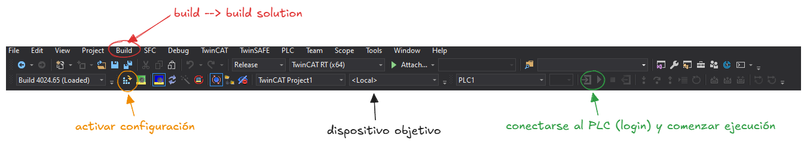

Compilación, descarga y modo Online
Compilar el proyecto
- Ve a Build → Build Solution (o pulsa
Ctrl + Shift + B). - Comprueba el panel Error List en la parte inferior. Si hay errores, corrígelos antes de continuar.
- Si la compilación es correcta, aparecerá el mensaje
Build succeeded.
Seleccionar el dispositivo objetivo
Para ejecutar en el propio PC (sin hardware externo):
- En la barra de herramientas de TwinCAT XAE, despliega el selector Choose Target System.
- Selecciona
<Local>para cargar el código en el runtime local.

Activar la configuración y arrancar el runtime
- Haz clic en Activate Configuration (icono de engranaje con flecha) o ve a TwinCAT → Activate Configuration.
- Aparecerá un diálogo preguntando si deseas activar la configuración → Yes.
- Otro diálogo preguntará si deseas reiniciar TwinCAT en Run Mode → Yes.
- El icono de TwinCAT en la barra de tareas cambiará a verde (Run Mode).
⚠️ En el caso de que al activar la configuración, TwinCAT informe que no es posible su activación debido al uso de la máquina virtual Hyper-V, es posible solucionar este problema de la siguiente manera. Primero es importante entender que aunque estemos utilizando TwinCAT en nuesto sistema operativo global, windows depende de Hyper-V para la correcta ejecución del Windows Subsystem for Linux (WSL) y Docker. Debemos por tanto anular la ejecución en segundo plano de Hyper-V. Para ello, abriremos PowerShell como administrador y ejectuaremos la siguiente línea de código:
bcdedit /set hypervisorlaunchtype offUna vez desactivada Hyper-V, debemos reiniciar nuestro ordenador y el problema debería haber sido solucionado. Para reactivar Hyper-V (en caso de que se necesite para usar WSL o Docker), ejecutaremos de la misma manera:
bcdedit /set hypervisorlaunchtype auto
Conectarse al PLC (Login)
- En el Solution Explorer, expande el proyecto PLC y haz doble clic en el programa MAIN.
- Ve a PLC → Login (o
Alt + F8). Se solicitará descargar el programa si hay cambios. - Confirma la descarga.
- Una vez conectado, arranca la ejecución con PLC → Start (
F5).